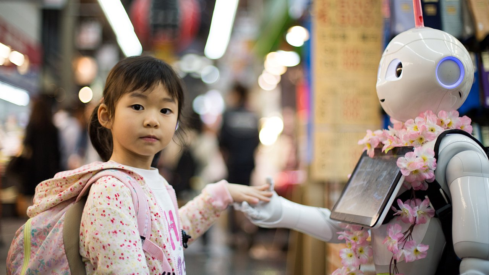

Según los analistas de Goldman Sachs, el próximo gran boom tecnológico puede estar en robots humanoides como el que nos quiere vender Elon Musk (si es que alguna ve cumple con esa promesa) Eso es lo que piensa Goldman Sachs que la industria de los humanoides — robots con forma de humanos capaces de andar y realizar tareas con la misma facilidad de nuestra especie — ganará al año a partir de 2035. La razón: la falta de mano de obra en países occidentales producto de la crisis de población a la que ya se enfrentan muchos países del primer mundo, incluyendo la propia China.
Como apunta la CNBC, la banca de inversión piensa que el mercado crecerá hasta 6.000 millones de dólares
al año en una década, despegando hasta los 154.000 al año para 2035. Y eso será sólo en EEUU, parece. El
informe asegura que “el lanzamiento del prototipo de robot humanoide de Tesla [Optimus] ha vuelto a
provocar un debate sobre las oportunidades financieras de dicha innovación. El caso de inversión para
los robots humanoides es considerable: estimamos que en 10-15 años se puede lograr un tamaño de mercado
de al menos 6.000 millones de dólares para satisfacer un 4% de la escasez de mano de obra en EEUU para
2030 y el 2% de la demanda mundial de atención a personas mayores para 2035".Eso sí, las compañías como
Tesla o Boston Dynamics deberán resolver un gran número de retos, tanto tecnológicos como sociales.
Goldman Sachs afirma que “si se superan por completo los obstáculos del diseño del producto, los casos
de uso, la tecnología, el precio y la aceptación pública, prevemos un mercado de hasta 152.000 millones
de dólares para 2035 en un escenario óptimo”.
Sería, según sus analistas, una industria cercana
en
tamaño al mercado mundial de vehículos eléctricos y un tercio del mercado mundial de teléfonos
inteligentes a partir de 2021. Sin embargo, a pesar de poner el Tesla Optimus como ejemplo, la firma
financiera norteamericana asegura que Tesla está muy por detrás de otras empresas de robótica. Por eso,
recomienda invertir en compañías que fabrican los componentes necesarios para realizar este tipo de
humanoides.
Cuando Musk demostró su cacareada primera versión de Optimus, expertos de todo el mundo destrozaron al robot de Tesla como tecnología anticuada. Expertos como el investigador de inteligencia artificial Filip Piekniewski, que lo declaró “como una vergüenza ajena” y “un timo completo y absoluto”. Cinthia Yeung, una de las mayores expertas en robótica del mundo, dijo que “nada de esto es tecnología de vanguardia. Contrata a gente capacitada o atiende cualquier conferencia de robótica, Tesla”. Sólo hay que ver el vídeo (y compararlo con cualquier de Boston Dynamics) para ver la diferencia. Efectivamente, da vergüenza ajena extrema ver esta demostración en 2022, casi tanto como escuchar las palabras de Musk, los aplausos de los empleados de Tesla y leer los comentarios de sus fans incondicionales.
Pero, aunque Goldman Sachs reconoce que Tesla está muy retrasada, el magnate sudafricano está de acuerdo en que es una industria prometedora, alguien de lo que poca gente duda. Además, como suele ser habitual, Musk sube la apuesta exageradamente: en marzo de este año afirmó que su robot humanoide Optimus va a tener más valor que toda la industria automovilística. Así se lo dijo a sus inversores y a la prensa financiera en la conferencia de resultados de Tesla, donde anunció ingresos de 18.760 millones dólares para el primer trimestre del año. Una cantidad que será insignificante en comparación a lo que van a ganar con el Tesla Bot, remachó. Por eso dijo en su día que Tesla iba a dedicar la mayor parte de sus recursos a crear este robot con inteligencia artificial. Musk aseguró entonces que iba a dedicar el 70% de toda la investigación y desarrollo de Tesla para el robot, dejando de lado a los coches con sólo un 30%. Habrá que ver si cumple con lo prometido o todo queda en agua de borrajas, como su Hyperloop. Hace una década, Elon Musk dijo al mundo que el transporte del futuro eran trenes en tubos corriendo a mil kilómetros por hora. Tubos de vidrio. Tubos de acero. Tubos de hormigón. Un tubo que iría a todas partes, conectando ciudades y pueblos.
Pero, como muchas de las ideas de Musk, ha sido un desastre. Hoy, tras más de mil millones de dólares de
inversión quemados por nueve startups y el propio Musk, los únicos ‘loops’ — bucles en español — que se
pueden hacer en el lugar donde se encontraba el Hyperloop de Musk son trompos y donuts con un Renault 5
Copa. El Hyperloop de Musk se ha convertido en un aparcamiento, un monumento funerario involuntario a
una terrible idea. Y las startups que se subieron al tren ahora languidecen o han muerto después de
gastar más mil millones de dólares. Afortunadamente, la industria de los robots humanoides no está en
manos de Musk, sino de compañías notablemente más capaces y avanzadas. Esperemos que tengan éxito y
pronto veamos estas máquinas porque, con el envejecimiento generalizado de la población, vamos a
necesitar ayuda pronto.
Liderados por los doctores Yunjie Yang y Francesco Giorgio-Serchi, científicos de la Universidad de
Edimburgo (Escocia) han conseguido desarrollar la primera piel electrónica: una tecnología mediante
sensores que permite replicar la capacidad de los seres vivos de percibir o sentir su propio movimiento
corporal, denominada propiocepción.
Como si de un sistema nervioso se tratase, "con los diferentes conjuntos de electrodos localizados en la
superficie del robot podemos capturar la información de movimiento y deformación en diferentes
posiciones”, explica el doctor Yang.
"Tenemos microcanales formados por metales líquidos, que conducen la respuesta de los diferentes
sensores electrodos a un procesador, el cual controla la recolección de señales procedentes de la piel
electrónica”, prosigue.
La tecnología que el grupo de investigación SMART de la Universidad de Edimburgo está desarrollando es más segura que los robots convencionales y puede ser utilizada en entornos más hostiles, y facilitar tareas más complejas. La primera de las aplicaciones de las que se puede beneficiar es la industria manufacturera: "Los robots obtienen sentido de sus propios movimientos, como de la presión e información del tacto, útil para el manejo de objetos frágiles” explica el investigador. En esa dirección, la piel electrónica inteligente podría ser utilizada en el sector sanitario. "Con el movimiento y la información táctil, proveería al doctor un control más preciso, más cercano al nivel de una lupa” con un robot quirúrgico, afirma Yang, algo en lo que ya están trabajando con un endoscopio prototipo, junto con el Consejo de Investigación Médica británico. Otro de sus futuros potenciales usos está en la inteligencia artificial: dar vida a copias, gemelos virtuales en el metaverso, una vez conectada a dispositivos móviles.
